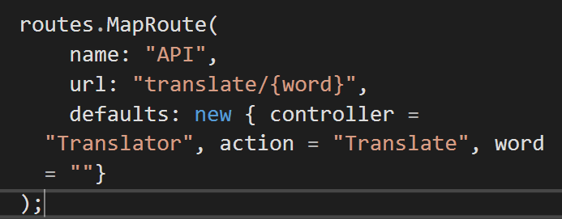
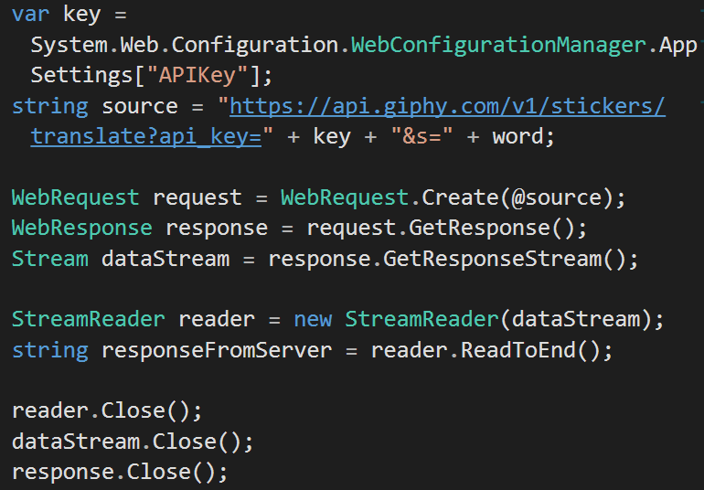
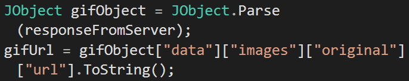
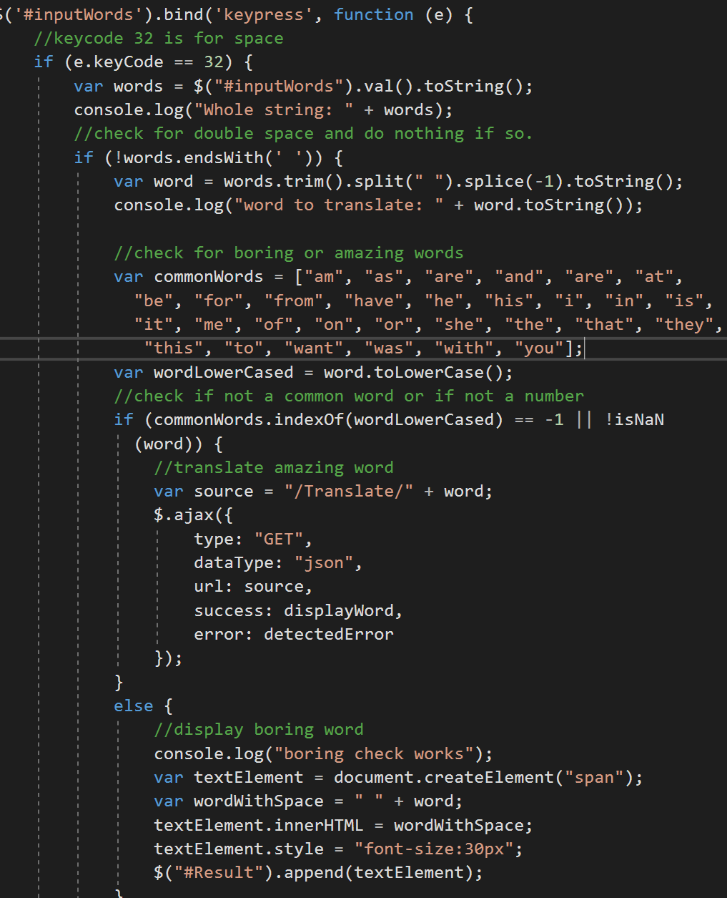
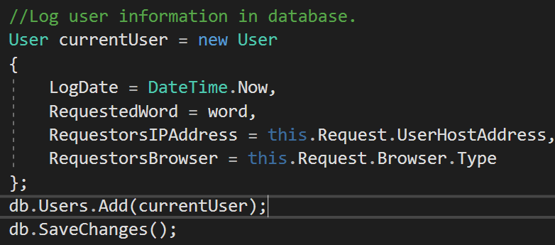

The main objective for this assignment is to create a mvc web application with a responsive view using Ajax. We will also implement an api from giphy. The assignment involves making one web page with a text box. The text box takes in an input and after each space entered it processes the last word and print or translate it to a gif based on our definition of boring/amazing. Full assignment details can be found here: http://www.wou.edu/~morses/classes/cs46x/assignments/HW7_1819.html
The setup involves making an empty mvc web application and then a simple web page with an input text box. Nothing notable was done in this part. One key setup part was making a custom route configuration. I basically just added another route in the route.config file. There isn't a whole lot to it other than that. Here is an image of the code added to the file:
The important parts here where how the api key was hidden and how it was used. The way I hid the api key was that it was put into a seperate file called AppSettingsSecrets.config with data and key values. It looked something like this:
<appSettings>
<add key="APIKey" value="xxxxxxxxxxxxxxxxxxxxxxxxxx" />
</appSettings>
Then I put this file outside the project file so that the repository does not save it. Then I went to the web.config file and at the appSettings tag I added file="..\..\..\AppSettingsSecrets.config" so that it knows where to look for the file when I need access to it.
The way the api was used is that I first made a proper url that involves the api key and requested word. Then I made a request using WebRequest. I then got the response and used a stream to read it and then got the data that I needed.
After that I just parsed it into a JObject since all the data was in one string. From there I could easily get the specified gif url that I needed.
This part involved first listening for a key press and then if the key press was a space, which signals a word being formed in the input text box, then It reads the whole string in. Then we have another check if it ends with a space incase the used clicked space more than once. Otherwise the next part will just constantly return the last word every time another space is pressed after another. Then if it gets through that check then the word is check if it is a boring word or an amazing word to see if we need to print it or transform it into a gif. Boring words are defined as a set of ~30 common words or a number, everything else is considered amazing. If it is boring then it just prints it out and if it is amazing then it sends a Get request to transform the word to a gif. Then, using the returned data (which includes the gif url) it then displays the gif on the webpage.
The database was very simple and the setup is similar to the setup of a past assignment database. I made a model named User.cs, a context called “UserContext.cs”, connection string in web.config file… etc. Some key parts to mention are the data I need to get for the database, specifically the IP Address of the requestor and the browser used. I then put a breakpoint in an action method and ran the debugger to find these values. Then these variables and 2 other variables that were trivial to get were put into the database at the start of the TranslateController.cs.
Test result video (Note that It has no sound):